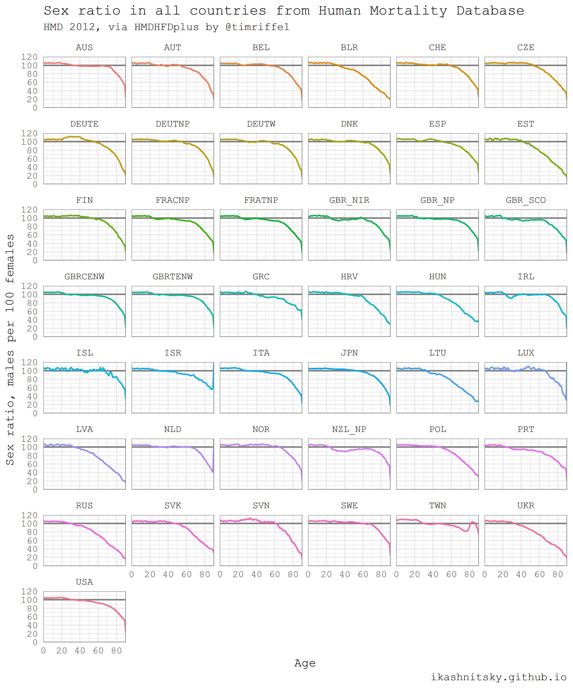
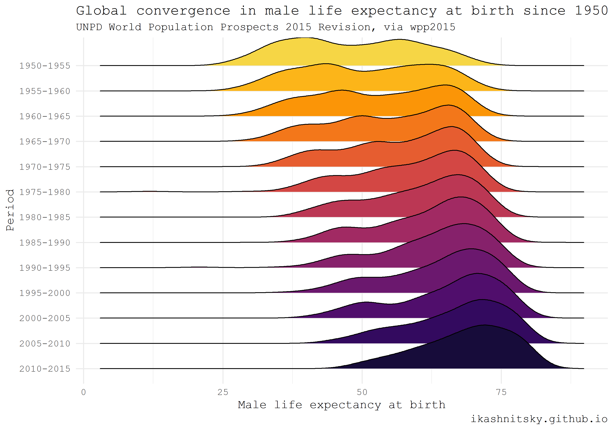
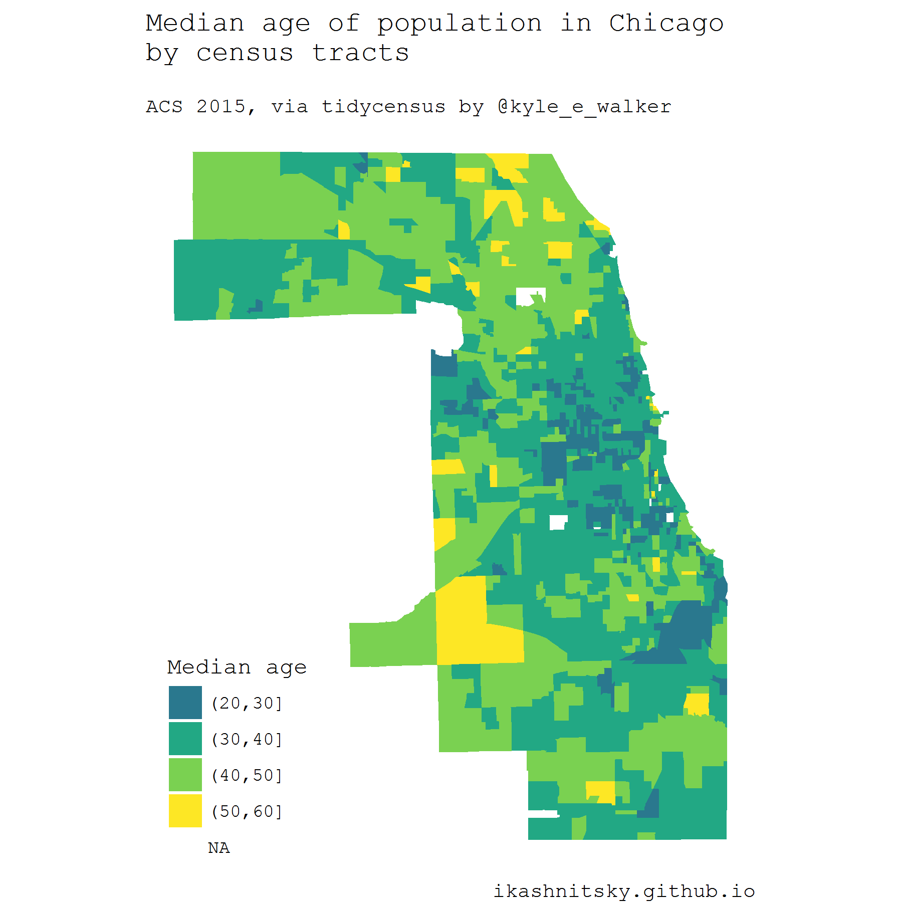

# load required packages
library(HMDHFDplus)
library(tidyverse)
library(purrr)
# help function to list the available countries
country <- getHMDcountries()
# remove optional populations
opt_pop <- c("FRACNP", "DEUTE", "DEUTW", "GBRCENW", "GBR_NP")
country <- country[!country %in% opt_pop]
# temporary function to download HMD data for a simgle county (dot = input)
tempf_get_hmd <- . %>% readHMDweb("Exposures_1x1", ik_user_hmd, ik_pass_hmd)
# download the data iteratively for all countries using purrr::map()
exposures <- country %>% map(tempf_get_hmd)
# data transformation to apply to each county dataframe
tempf_trans_data <- . %>%
select(Year, Age, Female, Male) %>%
filter(Year %in% 2012) %>%
select(-Year) %>%
transmute(age = Age, ratio = Male / Female * 100)
# perform transformation
df_hmd <- exposures %>%
map(tempf_trans_data) %>%
bind_rows(.id = "country")
# summarize all ages older than 90 (too jerky)
df_hmd_90 <- df_hmd %>%
filter(age %in% 90:110) %>%
group_by(country) %>%
summarise(ratio = ratio %>% mean(na.rm = T)) %>%
ungroup() %>%
transmute(country, age = 90, ratio)
# insert summarized 90+
df_hmd_fin <- bind_rows(df_hmd %>% filter(!age %in% 90:110), df_hmd_90)
# finaly - plot
df_hmd_fin %>%
ggplot(aes(age, ratio, color = country, group = country))+
geom_hline(yintercept = 100, color = "grey50", size = 1)+
geom_line(size = 1)+
scale_y_continuous(limits = c(0, 120),
expand = c(0, 0),
breaks = seq(0, 120, 20))+
scale_x_continuous(limits = c(0, 90),
expand = c(0, 0),
breaks = seq(0, 80, 20))+
facet_wrap(~country, ncol = 6)+
theme_minimal(base_family = "mono", base_size = 15)+
theme(legend.position = "none",
panel.border = element_rect(size = .5, fill = NA,
color = "grey50"))+
labs(x = "Age",
y = "Sex ratio, males per 100 females",
title = "Sex ratio in all countries from Human Mortality Database",
subtitle = "HMD 2012, via HMDHFDplus by @timriffe1",
caption = "ikashnitsky.github.io")Data acquisition in R (3/4)
r
tutorial
data acquisition
Ilya Kashnitsky ![]()
The series consists of four posts:
- Loading prepared datasets
- Accessing popular statistical databases
- Demographic data sources
- Getting spatial data
For each of the data acquisition options I provide a small visualization use case.
Human Mortality Database
When it comes to testing the big questions of human population dynamics, there is no more reliable data source than Human Mortality Database. This database is run by demographers who use state-of-the-art methodology to overcome issues in the data. As the result, the estimates are as precise as possible. Their methods protocol is a masterpiece of demographic data processing. On the down side, the data of decent enough quality is available for only a bunch of countries. To explore the data I highly recommend [Human Mortality Database Explorer][exp] by Jonas Schöley.
Thanks to Tim Riffe’s HMDHFDplus package, one can now download HMD data with just a couple of lines of R code. Please note that an account at mortality.org is needed in order to download data. As one may guess from the package name, it also helps to grab data from equally brilliant Human Fertility Database.
The following example is taken from my earlier post (and updated a bit). I think it illustrates nicely the power of automated data acquisition in R. Here I am going to download one year population population structures for both males and females for each single country of HMD. If you want to reproduce the result, beware that the script will download a couple of dozens megabits of data. Then I will calculate and visualize as small multiples sex ratios in all countries along age dimension. Sex ratios reflect the two basic regularities of human demographics: 1) there are always more boys being born; 2) males experience higher mortality throughout their life-course. Besides some artificial and well known exceptions, sex ratio at birth does not vary dramatically and is more or less constant at the level of 105-106 boys per 100 girls. Hence, differences in the sex ratio profiles of countries mainly reflect gender gap in mortality.

United Nations World Population Prospects
Population Department of the United Nations provides high quality population estimates for all countries of the world. They update estimates every 2-3 years and publish openly as an interactive report World Population Prospects. One may find in these reports key highlights and, of course, rich data. The data is later wrapped in R packages called wpp20xx. Currently, the available packages are for the estimate updates 2008, 2010, 2012, 2015, and 2017. I will give here an example of wpp2015 use adapted from my earlier post.
Using ridgeplot, the amazing type of dataviz promoted ggridges package by Claus Wilke, I am going to show the impressive reduction of global inequality in male mortality that took place since 1950.
library(wpp2015)
library(tidyverse)
library(ggridges)
library(viridis)
# get the UN country names
data(UNlocations)
countries <- UNlocations %>% pull(name) %>% paste
# data on male life expectancy at birth
data(e0M)
e0M %>%
filter(country %in% countries) %>%
select(-last.observed) %>%
gather(period, value, 3:15) %>%
ggplot(aes(x = value, y = period %>% fct_rev()))+
geom_density_ridges(aes(fill = period))+
scale_fill_viridis(discrete = T, option = "B", direction = -1,
begin = .1, end = .9)+
labs(x = "Male life expectancy at birth",
y = "Period",
title = "Global convergence in male life expectancy at birth since 1950",
subtitle = "UNPD World Population Prospects 2015 Revision, via wpp2015",
caption = "ikashnitsky.github.io")+
theme_minimal(base_family = "mono")+
theme(legend.position = "none")
American Community Survey and Census
There are several packages that provide access to the US Census and ACS data. Perhaps the most convenient one is the recent tidycensus package by Kyle Walker. One extremely useful feature of this approach is the ability to download geodata along with stats in the form of simple features. Simple features, a revolutionary approach to deal with spatial data in R implemented in sf package by Edzer Pebesma, allow to manage and visualize geodata tidy and efficiently. Note that in order to reproduce the following example one would have to install the development version of ggplot2.
Below I map median ages of census tracts population in Chicago based on the ACS estimates in 2015. To use tidycensus, an API key is required. API is instantly provided upon registration.
library(tidycensus)
library(tidyverse)
library(viridis)
library(janitor)
library(sf)
# to use geom_sf we need the latest development version of ggplot2
devtools::install_github("tidyverse/ggplot2", "develop")
library(ggplot2)
# you need a personal API key, available free at
# https://api.census.gov/data/key_signup.html
# normally, this key is to be stored in .Renviron
# see state and county codes and names
fips_codes %>% View
# the available variables
load_variables(year = 2015, dataset = "acs5") %>% View
# data on median age of population in Chicago
df_acs <- get_acs(
geography = "tract",
county = "Cook County",
state = "IL",
variables = "B01002_001E",
year = 2015,
key = ik_api_acs,
geometry = TRUE
) %>% clean_names()
# map the data
df_acs %>%
ggplot()+
geom_sf(aes(fill = estimate %>%
cut(breaks = seq(20, 60, 10))),
color = NA)+
scale_fill_viridis_d("Median age", begin = .4)+
coord_sf(datum = NA)+
theme_void(base_family = "mono")+
theme(legend.position = c(.15, .15))+
labs(title = "Median age of population in Chicago\nby census tracts\n",
subtitle = "ACS 2015, via tidycensus by @kyle_e_walker",
caption = "ikashnitsky.github.io",
x = NULL, y = NULL)
Tip
All the code chunks together can be found in this gist